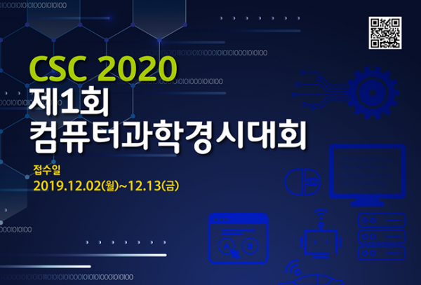
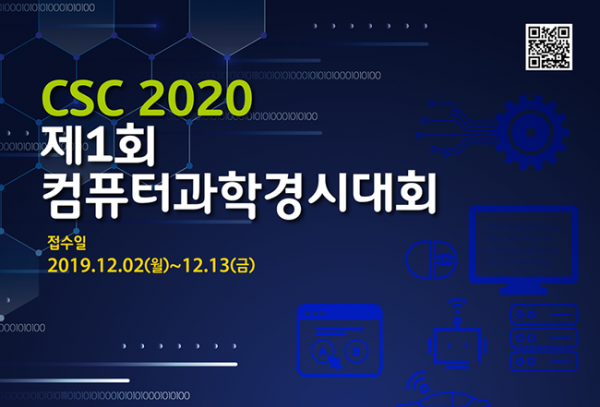

대회 일정
 

삼성 주니어 소프트웨어 창작 대회는 초.중.고등학생들이 탐여하는 소프트웨어
개발 공모전으로 삼성전자의 대표적 청소년 교육 사회공헌 프로그램입니다. 2015년에 시작해 올해로 6번째
열리며,참가자들이 자신의아이디어를 소프트웨어로 구현하며 발전시키는 공모전 형태로, 단순히
아이디어를 내는 데 그치지 않고 전반적으로 성장하도록 돕는 것이 특징입니다. 올해는 용자의 눈높이에서
문제를 바라보고 해결하는 방식인 ‘디자인 씽킹 클래스’를 본선 과정에 추가해 참가자들이
사람에 대한 공감과 이해를 바탕으로 창의적인 인재로 자라날 수 있게 도울 예정이라고 합니다.
대회가 끝나며 문제 발견부터 해결, 아이디어 구현까지 전 과정을 내려받아 포트폴리오로 활용할
수 있다고 합니다.
삼성 주니어 소프트웨어 창작 대회: 바로가기
다음으로 CSC 2020 제1회 컴퓨터과학경시대회는 국내 최초로 2017년 소프트웨어 영재교육원을
설치한 한양대학교에서 주최하는 경시대회로 이번이 1회차를 맞이하는 대회입니다. 이 대회는 청소년들이 컴퓨터과학에 대한
올바른 개념과 지식, 컴퓨터 관련문제를 해결할 수 있는 컴퓨팅 사고력, 자신의 해법을 설계하고
구현하는 프로그래밍 능력을 종합적으로 배양하는 것을 목표로 하고 있습니다. 대회는 다른대회와 차별화가
되는 다르게 "이론부문과 실기부문"이 나눠져있습니다.
SC 2020 제1회 컴퓨터과학경시대회: 바로가기